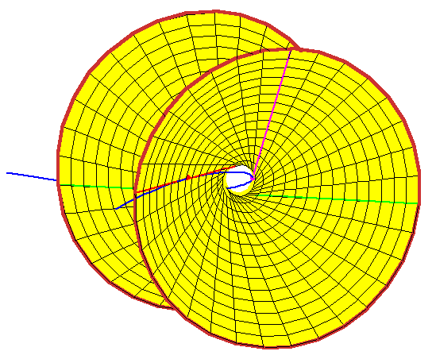

Back:
Three Lines Tangent to the Rational Normal Curve
Up:
The Shapiro Conjecture
Next:
Fourth Tangent Line
Hyperboloid Through the Three Tangent Lines
Begin with a rational normal curve in 3-space, and
select three points on it.
Consider the three tangent lines at those points.
The lines meeting these three lines form a ruling of the quadric (here a hyperboloid
of one sheet) through the three lines.
Each intersection of this hyperboloid with a fourth line gives a line meeting
all four.
In this geometric context, the Shapiro conjecture is
equivalent to the following geometric statement
Any line tangent to the rational normal curve at a real point meets the
hyperboloid in two real points.
It is not hard to believe this, as the rational normal curve loops around
the hyperboloid, but the next frame shows the geometry explicitly.

There are two animations of sizes
2088 KB and
4235 KB.
Last Modified Saturday 20 September 2003
by Frank Sottile